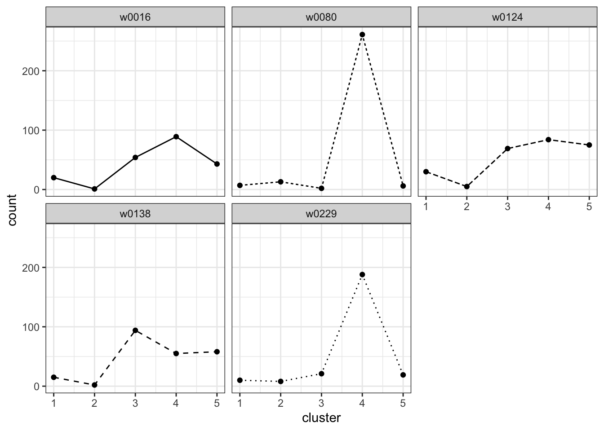
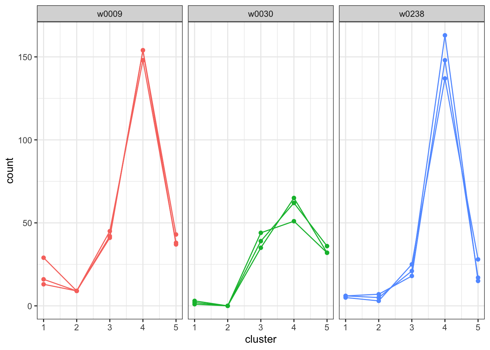
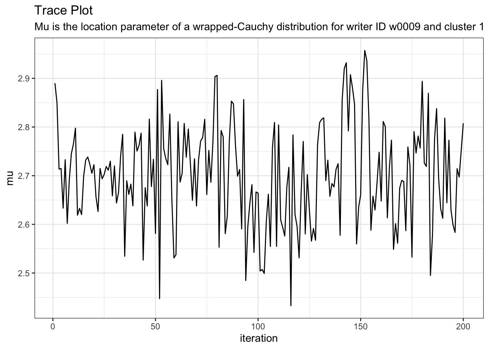
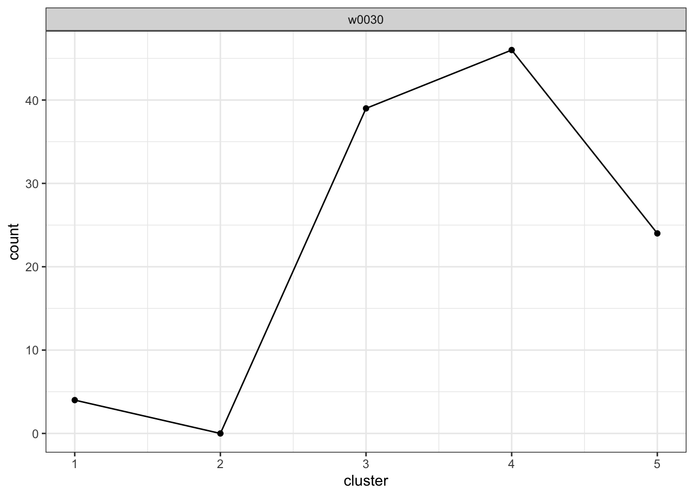

install.packages("devtools")
devtools::install_github("CSAFE-ISU/handwriterApp")
library(handwriterApp)
handwriterApp()handwriter
Handwriter is designed to assist forensic examiners by analyzing handwritten documents against a closed set of potential writers. It determines the probability that each writer wrote the document. Whether you are a forensic document examiner, legal professional, academic, or simply curious about how statistics are applied to handwriting, handwriter provides an automated way to evaluate handwriting samples.
Quick Start
VIEW A DEMO
View a demo of handwriter on handwritten documents from the CSAFE Handwriting Database. Go to demo.
SIMULATE CASEWORK WITH EXAMPLE DOCUMENTS
INSTALLATION
Handwriter requires R, RStudio IDE, and JAGS.
- Install R and RStudio from POSIT
- Install JAGS from SourceForge
LAUNCH THE APP
Open RStudio, navigate to the console window, and type:
In the pop-up window, click Open in Browser. If you use the app in the pop-up window instead of in a browser, some links will not work.
Click Simulate Casework and follow the instructions in the app.
Advanced
You can install handwriter from CRAN with:
install.packages("handwriter")You can install the development version of handwriter from GitHub with:
# install.packages("devtools")
devtools::install_github("CSAFE-ISU/handwriter")Process a Handwriting Example
The file “phrase_example.png” is a scanned PNG of handwriting from the CSAFE Handwriting Database. This PNG image is included in the handwriter package in a folder called “extdata.” Use the helper function handwriter_example() to find the path to where “phrase_example.png” is saved on your computer.
Use processDocument() to
- read the PNG file
- convert the writing to black and white
- thin it to a one-pixel-wide skeleton
- place nodes to break the writing into component shapes called graphs
library(handwriter)
phrase <- system.file("extdata", "phrase_example.png", package = "handwriter")
doc <- processDocument(phrase)
#> path in readPNGBinary: /Library/Frameworks/R.framework/Versions/4.4-arm64/Resources/library/handwriter/extdata/phrase_example.png
#> Starting Processing...
#> Getting Nodes...
#> Skeletonizing writing...
#> Splitting document into components...
#> Merging nodes...
#> Finding paths...
#> Split paths into graphs...
#> Organizing graphs...
#> Creating graph lists...
#> Adding character features...
#> Document processing completeWe can view the image:
plotImage(doc)
We can view the thinned image:
plotImageThinned(doc)
We can also view the nodes:
plotNodes(doc)
Perform Writership Analysis
This section explains how to perform handwriting analysis on questioned documents using handwriter. In particular, handwriter addresses the scenario where an investigator has a questioned handwritten document, a group of persons of interest has been identified, and the questioned document had to have been written by one of the persons of interest. For example, imagine that a handwritten bomb threat was left at a office building’s main desk and the police discover that the note had to have been written by one of the one hundred employees working that day. More details on this method can be found in [Crawford 2022].
STEP 1: Create the Main Directory and Subdirectories
Create a new folder called main_dir on your computer to hold the handwriting documents to be analyzed. When we create a new clustering template and fit a statistical model, those files will also be stored in this folder. Create a sub-folder in main_dir called data. In the data folder, create sub-folders called model_docs, questioned_docs, and template_docs. The folder structure will look like this:
├── main_dir
│ ├── data
│ │ ├── model_docs
│ │ ├── questioned_docs
│ │ ├── template_docsSTEP 2: Create a Cluster Template
Save the handwritten documents that you want to use to train a new cluster template as PNG images in main_dir > data > template_docs. The template training documents need to be from writers that are NOT people of interest. Name all of the PNG images with a consistent format that includes an ID for the writer. For example, the PNG images could be named “writer0001.png”, “writer0002.png”, “writer0003.png” and so on.
Next, create a new cluster template from the documents in main_dir > data > template_docs with the function make_clustering_template. This function
- Processes the template training documents in
template_docs, decomposing the handwriting into component shapes called graphs. The processed graphs are saved in RDS files inmain_dir \> data \> template_graphs. - Deletes graphs with more than 30 edges.
- Randomly selects
Kstarting cluster centers using seedcenters_seedfor reproducibility. - Runs a K-means algorithm with the
Kstarting cluster centers and the selected graphs. The algorithm iteratively groups the selected graphs intoKclusters. The final grouping ofKclusters is the cluster template. - Stores the writer ID for each training document.
writer_indicesis a vector of the start and stop characters of the writer ID in the PNG image file name. For example, if the PNG images are named “writer0001.png”, “writer0002.png”, “writer0003.png”, and so on,writer_indices = c(7,10) - Performs some of the processes in parallel. Set the number of cores for parallel processing with
num_dist_cores.
template <- make_clustering_template(
main_dir = "path/to/main_dir",
template_docs = "path/to/main_dir/data/template_docs",
writer_indices = c(7,10),
centers_seed = 100,
K = 40,
num_dist_cores = 4,
max_iters = 25)Type ?make_clustering_template in the RStudio console for more information about the function’s arguments.
For the remainder of this tutorial, we use a small example cluster template, example_cluster_template included in handwriter.
template <- example_cluster_templateThe idea behind the cluster template and the hierarchical model is that we can decompose a handwritten document into component graphs, assign each graph to the nearest cluster, the cluster with the closest shape, in the cluster template, and count the number of graphs in each cluster. We characterize writers by the number of a writer’s graphs that are assigned to each cluster. We refer to this as a writer’s cluster fill counts and it serves as writer profile.
We can plot the cluster fill counts for each writer in the template training set. First we format the template data to get the cluster fill counts in the proper format for the plotting function.
template_data <- format_template_data(template = template)
plot_cluster_fill_counts(template_data, facet = TRUE)
STEP 3: Fit a Hierarchical Model
We will use handwriting samples from each person of interest, calculate the cluster fill counts from each sample using the cluster template, and fit a hierarchical model to estimate each person of interest’s true cluster fill counts.
Save your known handwriting samples from the persons of interest in main_dir \> data \> model_docs as PNG images. The model requires three handwriting samples from each person of interest. Each sample should be at least one paragraph in length. Name the PNG images with a consistent format so that all file names are the same length and the writer ID’s are in the same location. For example, “writer0001_doc1.png”, “writer0001_doc2.png”, “writer0001_doc3.png”, “writer0002_doc1.png”, and so on.
We fit a hierarchical model with the function fit_model. This function does the following:
- Processes the model training documents in
model_docs, decomposing the handwriting into component graphs. The processed graphs are saved in RDS files inmain_dir \> data \> model_graphs. - Calculates the cluster fill counts for each document by assigning each graph to the nearest cluster in the cluster template and counting the number of graphs assigned to each cluster. The cluster assignments are saved in main_dir > data > model_clusters.rds
- Fits a hierarchical model to the cluster fill counts using the RJAGS package and draws posterior samples of model parameters with the coda package.
In this example, we use 4000 MCMC iterations for the model. The inputs writer_indices and doc_indices are the starting and stopping characters in the model training documents file names that contains the writer ID and a document name.
model <- fit_model(main_dir = "path/to/main_dir",
model_docs = "path/to/main_dir/data/model_docs",
num_iters = 4000,
num_chains = 1,
num_cores = 2,
writer_indices = c(7, 10),
doc_indices = c(11, 14))For this tutorial, we will use the small example model, example_model, included in handwriter. This model was trained from three documents each from writers 9, 30, 203, 238, and 400 from the CSAFE handwriting database.
model <- example_modelWe can plot the cluster fill counts for each person of interest. (NOTE: We had to format the template data to work with the plotting function, but the model data is already in the correct format.)
plot_cluster_fill_counts(formatted_data=model, facet = TRUE)
The bars across the top of each graph show the Writer ID. Each graph has a line for each known handwriting sample from a given writer.
Hierarchical Model Variables and Burn-in
If you are interested in the variables used by the hierarchical model, continue reading this section. Otherwise, feel free to skip to the next section to learn how to analyze questioned documents.
We can list the variables in the model:
names(as.data.frame(coda::as.mcmc(model$fitted_model[[1]])))
#> [1] "eta[1]" "eta[2]" "eta[3]" "eta[4]" "eta[5]" "gamma[1]"
#> [7] "gamma[2]" "gamma[3]" "gamma[4]" "gamma[5]" "mu[1,1]" "mu[2,1]"
#> [13] "mu[3,1]" "mu[1,2]" "mu[2,2]" "mu[3,2]" "mu[1,3]" "mu[2,3]"
#> [19] "mu[3,3]" "mu[1,4]" "mu[2,4]" "mu[3,4]" "mu[1,5]" "mu[2,5]"
#> [25] "mu[3,5]" "pi[1,1]" "pi[2,1]" "pi[3,1]" "pi[1,2]" "pi[2,2]"
#> [31] "pi[3,2]" "pi[1,3]" "pi[2,3]" "pi[3,3]" "pi[1,4]" "pi[2,4]"
#> [37] "pi[3,4]" "pi[1,5]" "pi[2,5]" "pi[3,5]" "tau[1,1]" "tau[2,1]"
#> [43] "tau[3,1]" "tau[1,2]" "tau[2,2]" "tau[3,2]" "tau[1,3]" "tau[2,3]"
#> [49] "tau[3,3]" "tau[1,4]" "tau[2,4]" "tau[3,4]" "tau[1,5]" "tau[2,5]"
#> [55] "tau[3,5]"View a description of a variable with the about_variable function.
about_variable(variable = "mu[1,1]", model = model)
#> [1] "Mu is the location parameter of a wrapped-Cauchy distribution for writer ID w0009 and cluster 1"View a trace plot of a variable.
plot_trace(variable = "mu[1,1]", model = model)
If we need to, we can drop the beginning MCMC iterations for burn-in. For example, if we want to drop the first 25 iterations, we use
model <- drop_burnin(model, burn_in = 25)If we want to save the updated model as the current model for this project, replace model.rds in the data folder with
saveRDS(model, file='data/model.rds')Analyze Questioned Documents
Save your questioned document(s) in main_dir > data > questioned_docs as PNG images. Assign a new writer ID to the questioned documents and name the documents consistently. E.g. “unknown1000_doc1.png”, “unknown1001_doc1.png”, and so on.
We estimate the posterior probability of writership for each of the questioned documents with the function analyze_questioned_documents. This function does the following:
- Process Questioned Document(s): Processes the questioned documents in
questioned_docs, decomposing the handwriting into component graphs. The processed graphs are saved in RDS files inmain_dir \> data \> questioned_graphs. - Estimate the Writer Profile of the Questioned Document(s): Calculates the cluster fill counts for each questioned document by assigning each graph to the nearest cluster in the cluster template and counting the number of graphs assigned to each cluster. The cluster assignments are saved in
main_dir \> data \> questioned_clusters.rds. - Estimate the Posterior Probability of Writership: Uses the fitted model from Step 3 to estimate the posterior probability of writership for each questioned document and each person of interest. The results are saved in
main_dir \> data \> analysis.rds.
analysis <- analyze_questioned_documents(
main_dir = "path/to/main_dir",
questioned_docs = "path/to/main_dir/questioned_docs",
model = model,
writer_indices = c(8,11),
doc_indices = c(13,16),
num_cores = 2)Let’s pretend that a handwriting sample from each of the 5 “persons of interest” is a questioned document. These documents are also from the CSAFE handwriting database and have already been analyzed with example_model and the results are included in handwriter as example_analysis.
analysis <- example_analysisView the cluster fill counts for each questioned document. Intuitively, the model assesses which writer’s cluster fill counts look the most like the cluster fill counts observed in each questioned document.
plot_cluster_fill_counts(analysis, facet = TRUE)
View the posterior probabilities of writership.
analysis$posterior_probabilities
#> known_writer w0030_s03_pWOZ_r01
#> 1 known_writer_w0009 0
#> 2 known_writer_w0030 1
#> 3 known_writer_w0238 0For Research Only
In practice, we would not know who wrote a questioned document, but in research we often perform tests to evaluate models using data where we know the ground truth. Because in this example, we know the true writer of each questioned document, we can measure the accuracy of the model. We define accuracy as the average posterior probability assigned to the true writer. The accuracy of our model is
calculate_accuracy(analysis)
#> [1] 1